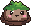
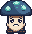

Dewleaf Verge
Field
Leads to
Zones and monsters
| Zone | Monsters |
|---|---|
| Ruins Beyond | Dusk Dewdrop Slime ×10 |
| Tumbled Arch Walk | Dusk Dewdrop Slime ×10 |
| Outer Glimmer Shore |  Bog Moss Slime ×13 |
| Reedshade Inlet | Bog Moss Slime ×5  Gloom Sporecap ×5 |
| West Grove Rim | Gloom Sporecap ×13 |
| Violetbloom Clearing | Bog Moss Slime ×5 Gloom Sporecap ×5 |
Elite zones
- Ruins Beyond: Dusk Dewdrop Slime · 2% chance per respawn
- Tumbled Arch Walk: Dusk Dewdrop Slime · 2% chance per respawn
- Outer Glimmer Shore: Bog Moss Slime · 2% chance per respawn
- Reedshade Inlet: Bog Moss Slime Gloom Sporecap · 2% chance per respawn
- West Grove Rim: Gloom Sporecap · 2% chance per respawn
- Violetbloom Clearing: Gloom Sporecap Bog Moss Slime · 2% chance per respawn
Zones
Ruins Beyond, Tumbled Arch Walk, Outer Glimmer Shore, Reedshade Inlet, West Grove Rim, Violetbloom Clearing